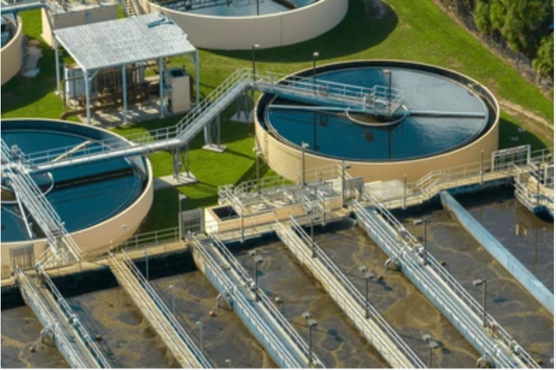

ZLD & MVRE
Zero Liquid Discharge Systems for Industrial Wastewater
EEPL engineers ZLD systems in India for high TDS wastewater, water recycling and strict discharge compliance using RO, MEE, MVRE, ATFD and crystallizer integration.
Discuss a ZLD Project
MVRE, MEE and ATFD ZLD System Design for High Water Recovery
Water Recovery
Designed for maximum reuse and reduced freshwater dependency.
High TDS
Treatment trains for concentrated industrial effluent and brine.
Energy Efficiency
MVRE and heat recovery options to reduce lifecycle cost.
Compliance
Systems aligned with CPCB and Pollution Control Board expectations.